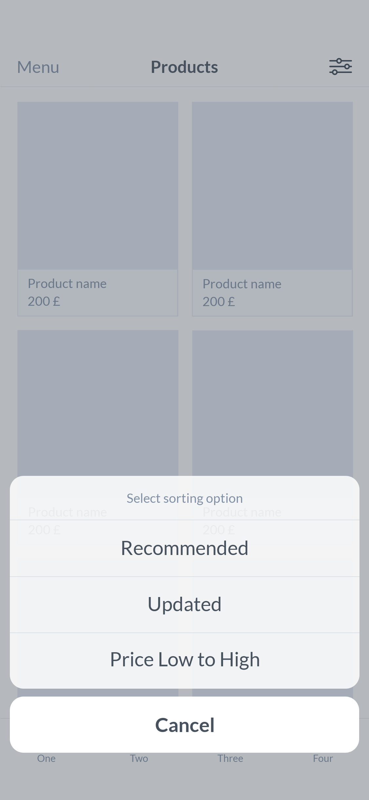
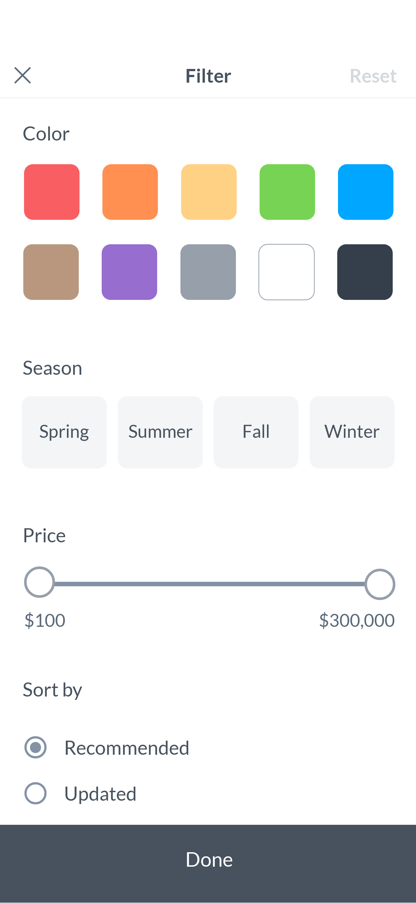

콘텐츠 화면에서 바로 노출되며, 옵션이 많은 경우 레이어나 별도 페이지에서 설정할 수 있도록 한다.
새로고침(Reset) 버튼을 활성화하여 설정 값을 초기화할 수 있도록 한다.
소셜 네트워킹, 커뮤니티
Food & Drink레시피, 레스토랑 리뷰
Shopping쇼핑, 쿠폰, 상품 리뷰
News방송 미디어, 뉴스리더
Travel항공권·호텔 예약, 여행 계획 및 정보 찾기
Entertainment영상 콘텐츠, 공연 티켓 발권
Lifestyle부동산, 취미, 인테리어
Health & Fitness운동 추적, 명상, 체중 관리
Business공동 작업 관리, 구직
Education학습, 학교 포털
Music음악 감상, 녹음·연주, 작곡
Books전자책, 인터렉티브 북